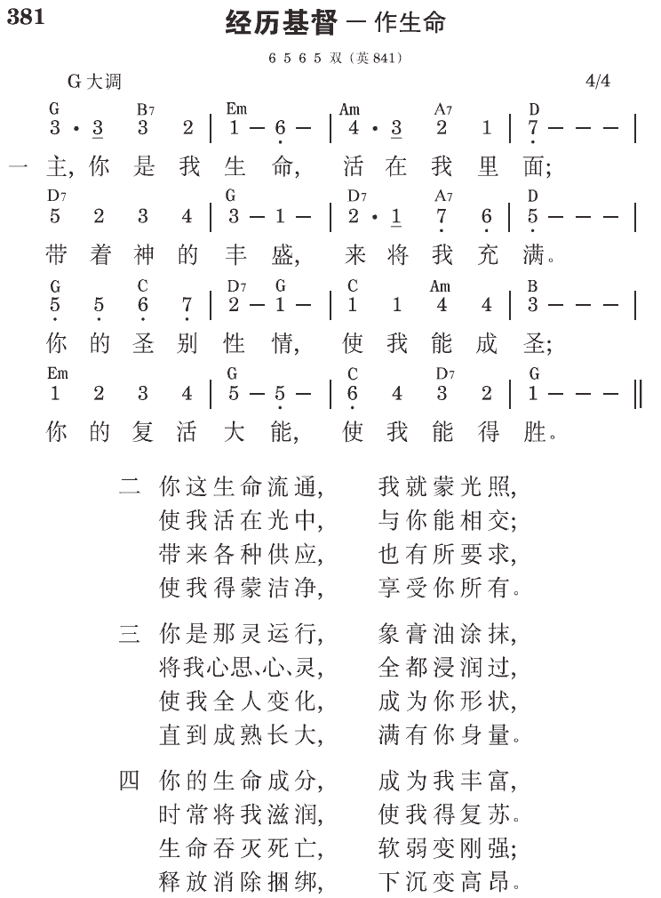

西3:4 基督是我们的生命，祂显现的时候，你们也要与祂一同显现在荣耀里。
约5:24 我实实在在地告诉你们，那听我话，又信差我来者的，就有永远的生命，不至于受审判，乃是已经出死入生了。
神需要我们，我们需要基督
神需要人，而人需要基督。没有人，神不能完成祂的定旨；没有人，神不能作任何事。另一面，我们也必须说，“没有基督，我不能作任何事。”没有我们，神不能作任何事；没有基督，我们也不能作任何事。神需要我们，我们需要基督。我们在这里是为着神；基督在这里是为着我们。
我们若不是为着神，并且没有基督为着我们，我们就是悲惨、可怜的。不幸的是，这正是今天世人真实的光景。世界上的人不为着神，也没有基督为着他们。他们自己作主，信靠自己。但我们基督徒与他们不同，因为我们是为着神，并有基督为着我们。
以基督为我们的生命
就人的一面说，我们也许不能作许多事，但我们都能呼吸、吃喝。即使小小的婴孩也知道如何吃喝、呼吸，而不需要任何人教他们。照样，在属灵的范围里，我们也是有所不能的；但我们能吸入基督（约二十22）、喝基督（四14，七37）、并接受基督作我们的食物（六35，51，57）。基督是空气、是气息，基督是水、是饮料，基督是粮食、是食物；因此，我们都能吸取祂。神无意要我们凭着自己彰显祂，或凭自己为祂作什么。神的目的乃是要我们接受基督作生命（西三4，约六57，十四19），而彰显祂并为祂作事。
有两大错误─一是世人所犯的，一是基督徒所犯的。世人的大错误是他们不为神作什么。另一面，基督徒试着要靠自己为神作事；这也是一个大错误。我们正确的路乃是不凭我们自己，而凭基督作我们的生命，来为神作事。主耶稣说，“离了我，你们就不能作什么。”（约十五5下）然而使徒保罗说，“我在那加我能力者的里面，凡事都能作。”（腓四13）没有基督，我们不能作什么；但有了基督，并在基督里，我们就凡事都能作。主在约翰十四章二十节告诉门徒：“到那日，你们就知道我在我父里面，你们在我里面，我也在你们里面。”因此，我们并非没有基督。我们有基督，并且我们在基督里。
今天在人类社会中，没有别的，只有虚空和痛苦，因为世人都在错误的道路上。他们与神无分无关；然而基督徒却试着靠自己为神作事。如今在这世代的末了，主要有所恢复，而这恢复主要的是借着年轻的一代。因此，你们青年人都该学习，如何以基督为你们的生命，而为着神。我若问你们在这里作什么，你们不该说你们是在这里读书或作事。你们必须回答说，“我在南加州这里是为着神！”青年人在这里作什么？他们在这里是为着神！用什么方式？乃是借着以基督为他们的生命！这意思是说，他们吸基督，喝基督，并吃基督。
没有我们，神不能作什么；没有基督，我们也不能作什么。我们是神的器皿，需要以基督为我们的生命。我们是适合接受基督作我们生命的，这是何等奇妙！动物被造不是为着接受基督；但我们是，我们都有资格接受基督。
我们需要基督作生命
我们要作某一件事，必须有作那事的正确生命。狗会吠，因为它有狗的生命，这生命就是会吠的生命。猫会捉老鼠，因为猫的生命里有这性能，我们却没有。照样，我们若要彰显神，运用神的权柄，就需要有这种生命。人的生命既不适合彰显神，也不适合运用神的权柄；但人的生命适合接受另一种生命，是能够彰显神、代表神的。一切动物的生命，如狗的生命、猫的生命、或鸟的生命，都不适合接受另一种生命，神并没有那样造它们。但神的确用一种方式创造我们，使我们能接受另一种生命。这生命乃是神自己那永远的生命，也就是基督。
神创造我们，给我们造了人的灵，作为接受的器官，好接受神自己到我们里面，作我们的生命。人的生命不能彰显神，也不适合运用神的权柄；但人的生命适合一件事，就是接受那有能力的生命─永远的生命（约壹一2）。“人有了神的儿子，就有生命；没有神的儿子，就没有生命。”（五12）
向基督敞开我们自己并接受祂作我们的生命
没有基督，一切都是空的。没有基督，一切都是虚空。人是宇宙的意义，而基督是人生的意义。虽然人是宇宙的意义，若没有基督，人仍缺乏内容或实际。没有基督，人不过是虚空的器皿。人这虚空的器皿，需要基督作内容。这就是为什么我们必须向基督敞开我们自己，接受祂作我们的生命。
你需要一直敞开自己，呼求祂的名；不要在心思里持守任何宗教或属灵的事物。这样你就会看见，祂是那即时、现时、今时、时时的基督；祂是此时此刻的基督。在人拒绝、逼迫你时，祂是基督。不要在心思里持守这么多道理；道理不管用，只有基督管用。这位基督是那活的基督；祂不是道理的基督或教训里的基督，乃是那现时、真实、实际的，作为赐生命之灵的基督（林前十五45下）。你只要简单地呼求祂。
祂是活的灵，一直与我们同在。祂是现时、有效、便利、即时的。不论你在那里，处于何种环境，不论你面对何人，或被人如何对待，你要忘记你自己和你的讲理；只要向祂敞开呼求：“哦，主耶稣。”只要享受祂，祂是你的生命和你的内容，是你人生的意义 （《传扬高品福音的生活》二〇至二三、三七至四〇页）。
参读：《传扬高品福音的生活》第三至四章。
